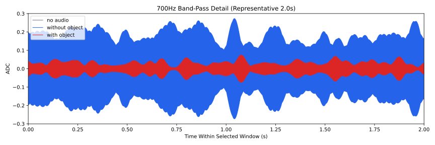
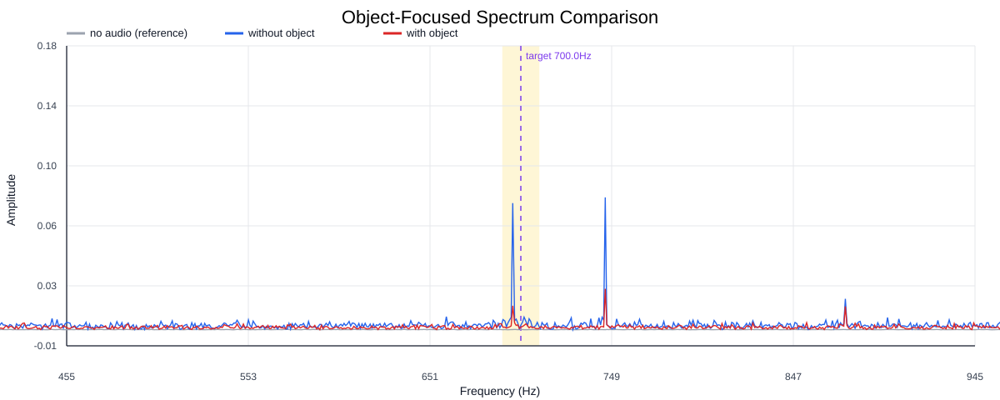
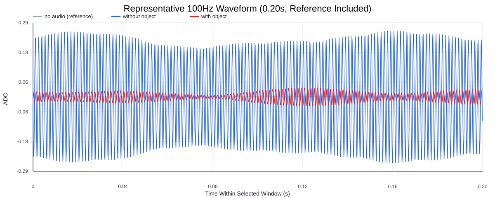
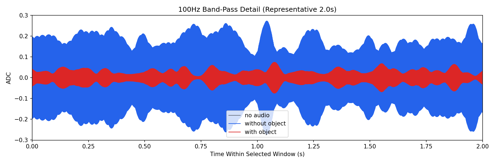
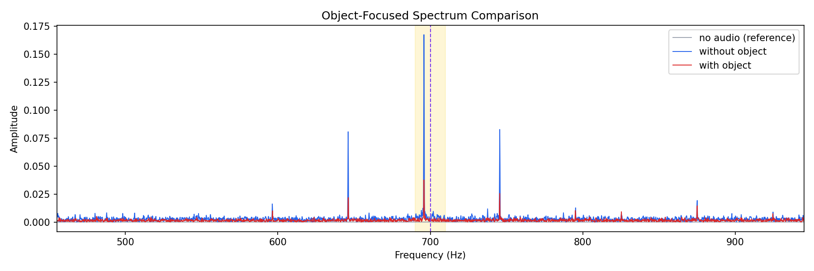
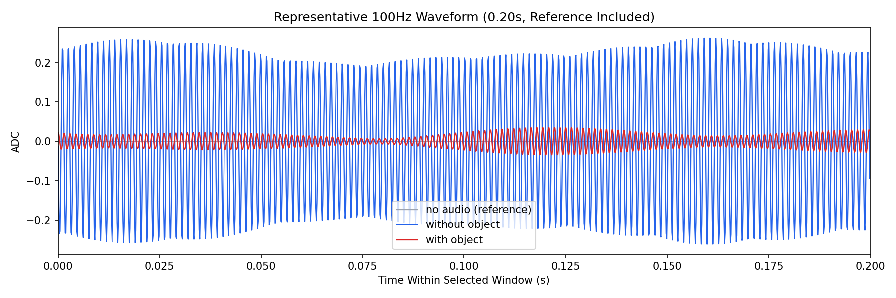

Background: F:\项目类文件夹\异物检测4.10\Data_Dual\frequency_sweep\0700Hz\repeat_05\raw\no_audio.csv
Without object: F:\项目类文件夹\异物检测4.10\Data_Dual\frequency_sweep\0700Hz\repeat_05\raw\without_object.csv
With object: F:\项目类文件夹\异物检测4.10\Data_Dual\frequency_sweep\0700Hz\repeat_05\raw\with_object.csv
| Metric | 无音频 | 100Hz无异物 | 100Hz有异物 | 无异物/无音频 | 有异物/无异物 | 有异物/无音频 |
|---|---|---|---|---|---|---|
| centered_rms | 0.012061 | 0.295941 | 0.155391 | 24.5360 | 0.5251 | 12.8832 |
| raw_target_amp | 0.000181 | 0.002965 | 0.001738 | 16.4056 | 0.5863 | 9.6182 |
| filtered_rms | 0.001043 | 0.114582 | 0.031545 | 109.8143 | 0.2753 | 30.2321 |
| filtered_target_amp | 0.000181 | 0.002965 | 0.001738 | 16.4056 | 0.5863 | 9.6182 |
| filtered_energy_ratio | 0.007484 | 0.149907 | 0.041210 | 20.0313 | 0.2749 | 5.5067 |
| window_filtered_target_amp_mean | 0.000419 | 0.153087 | 0.039300 | 364.9473 | 0.2567 | 93.6874 |
| window_filtered_target_amp_std | 0.001323 | 0.039842 | 0.018279 | 30.1036 | 0.4588 | 13.8108 |





